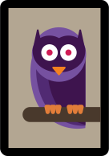
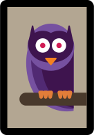

We should carve turnips, not pumpkins
The origin of Jack-O-Lanterns comes from a Celtic folk tale of a stingy farmer named Jack who would constantly play tricks on the devil. The devil responded by forcing him to wander purgatory with only a burning lump of coal from hell. Jack took the coal and made a lantern from a turnip, using it to guide his lost soul. America’s pumpkins were used as a substitute to guide lost souls and keep evil spirits like “Jack of the Lantern” away
The owl is a popular Halloween image.
In Medieval Europe, owls were thought to be witches, and to hear an owl's call meant someone was about to die.
Fears of poisoned Halloween candy are unfounded
One of parents’ biggest fears is that their child’s Halloween candy is poisoned or contains razor blades. In reality, this fear is almost entirely unfounded. There are only two known cases of poisoning, and both involved relatives.
Halloween and the candy industry supposedly influenced Daylight Savings Time
Candy makers supposedly lobbied to extend daylight savings time into the beginning of November to get an extra hour of daylight so children could collect even more candy (thus forcing people to purchase more candy to meet the demand).

Halloween is still the Wiccan New Year
Halloween originates from a Celtic tradition called Samhain, a festival that marked the end of the Celtic calendar year in Ireland, Scotland, and the Isle of Man. They believed it was a time that spirits or fairies could enter our world, and the Celts would put out treats and food to placate the spirits — sometimes, a place at the table was even set for the souls of the dead. Wiccans still celebrate Samhain as a New Year celebration today.
Halloween is the second-most commercial American holiday of the year
The candy industry in America rakes in an average of $2 billion annually thanks to Halloween (that's 90 million pounds of chocolate). Americans spend an estimated $6 billion on Halloween annually, including candy, costumes, and decorations, according to History.com. (The most commercial holiday in the U.S. is obviously Christmas.)
A full moon on Halloween is extremely rare.
Though a common trope in horror movies and Halloween decorations with witches flying across the full moon, the next full moon on Halloween won't occur until 2020. The most recent Halloween full moon was back in 2001, and before that it was in 1955.
There's a $1,000 fine for using or selling Silly String in Hollywood on Halloween.
The prank product has been banned in Hollywood since 2004 after thousands of bored people would buy it on the streets of Hollywood from illegal vendors and "vandalize" the streets. The city ordinance calls for a maximum $1,000 fine and/or six months in jail for "use, possession, sale or distribution of Silly String in Hollywood from 12:01 AM on October 31 to 12:00 PM on November 1."
Candy Corn was originally known as "chicken feed."
Invented by George Renninger, a candy maker at the Wunderle Candy Company of Philadelphia in the 1880s, Candy Corn was originally called "butter cream candies" and "chicken feed" since back then, corn was commonly used as food for livestock.
Dressing up on Halloween comes from the Celts
Celts believed Samhain was a time when the wall between our world and the paranormal world was porous and spirits could get through. Because of this belief, it was common for the Celts to wear costumes and masks during the festival to ward off or befuddle any evil spirits.